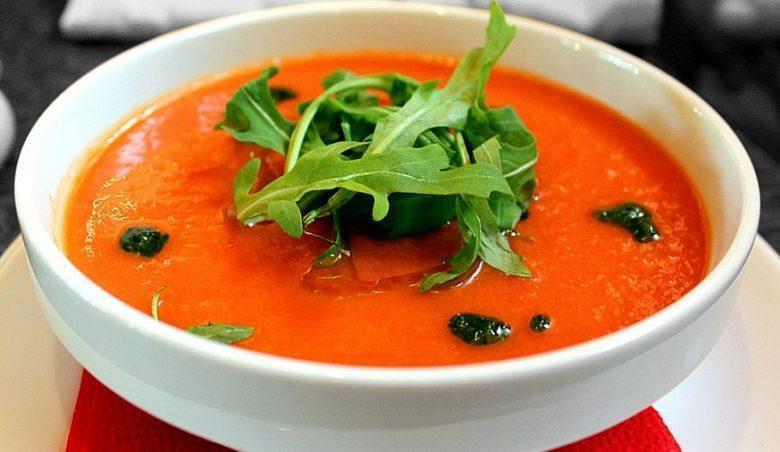

Gazpacho

Description
Wonderful cold soup full of fresh Mediterranean vegetables! Quick and easy.
Ingredients
- 4 cups tomato juice
- 1 onion, minced
- 1 green bell pepper, minced
- 1 cucumber, chopped
- 2 cups chopped tomatos
- 2 green onions, chopped
- 1 clove garlic, minced
- 3 tablespoons fresh lemon juice
- 2 tablespoons red wine vinegar
- 1 teaspoon dried tarragon
- 1 teaspoon dried basil
- 1/4 cup chopped fresh parsley
- 1 teaspoon white sugar
- salt and pepper to taste
Steps
- In a blender or food processor, combine tomato juice, onion, bell pepper, cucumber, tomatoes, green onions, garlic, lemon juice, red wine vinegar, tarragon, basil, parsley, sugar, salt, and pepper.
- Blend until well-combined but still slightly chunky.
- Chill at least 2 hours before serving.